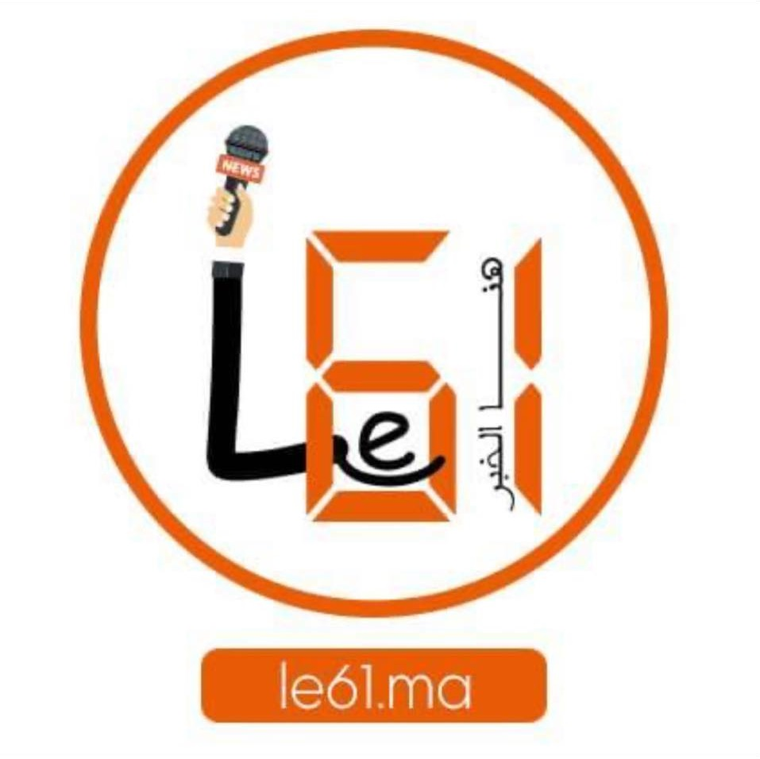
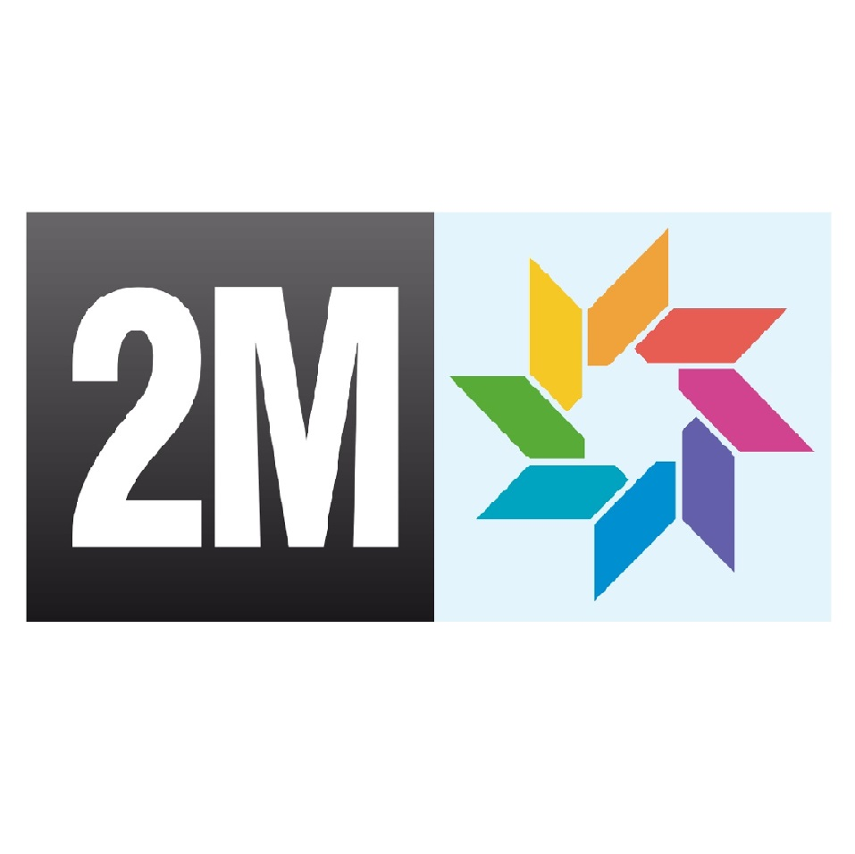
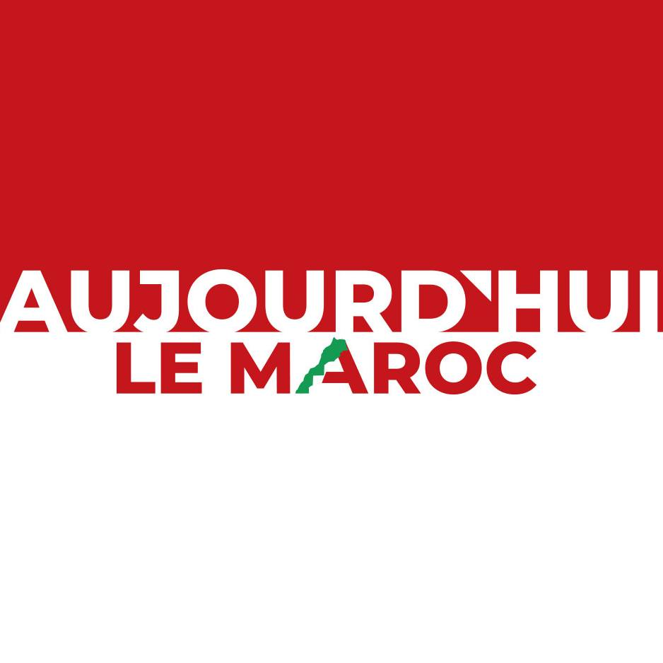
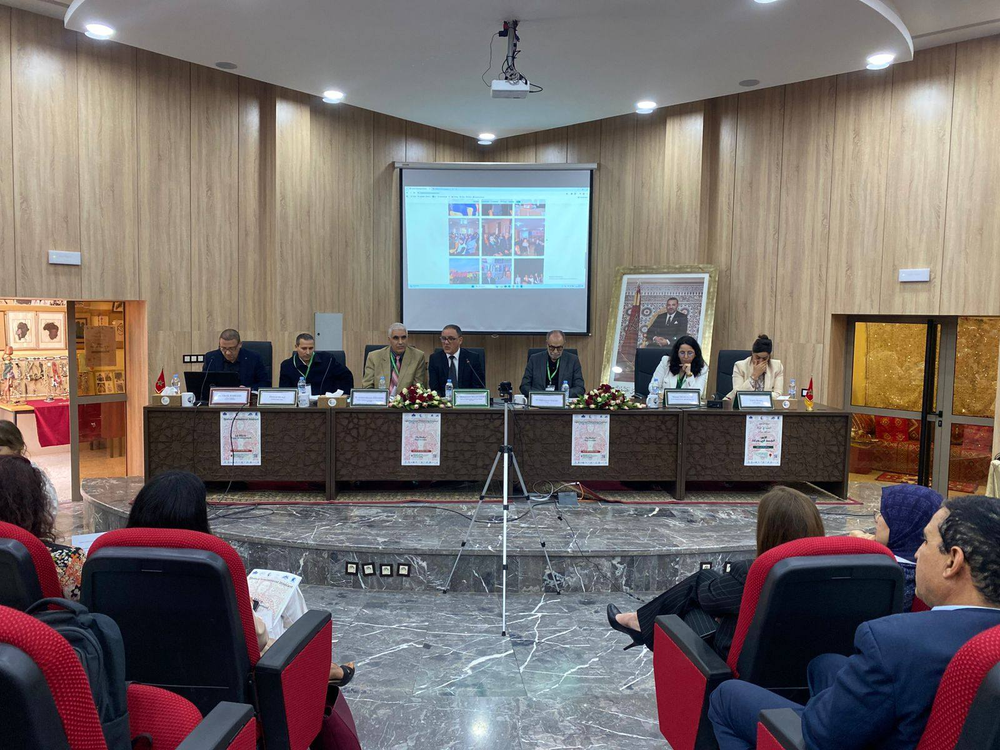
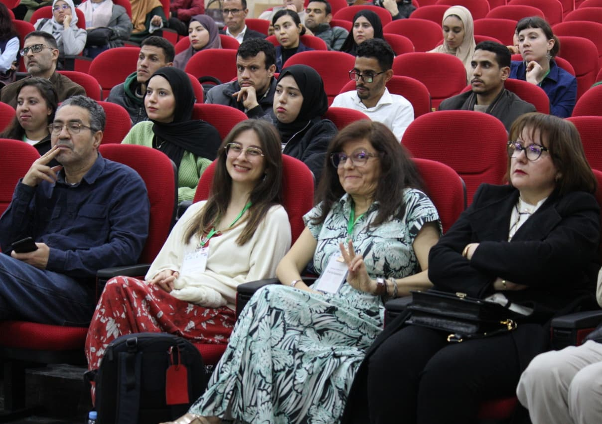
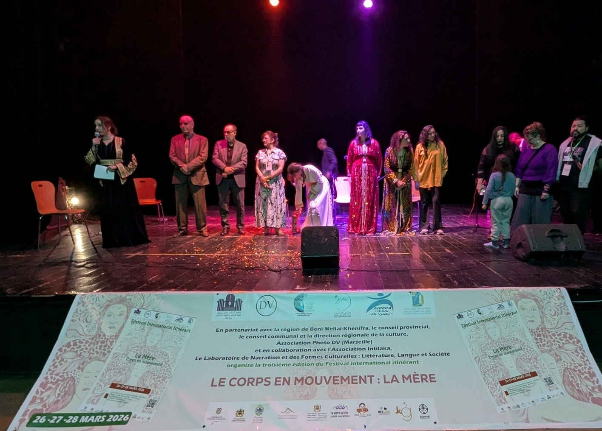
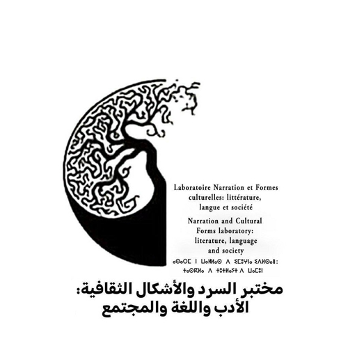
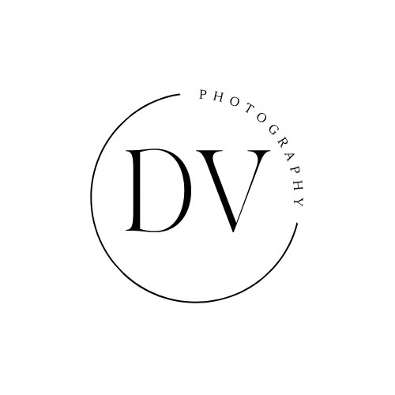
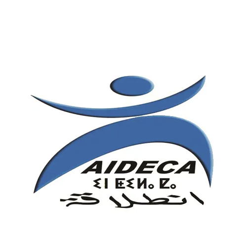
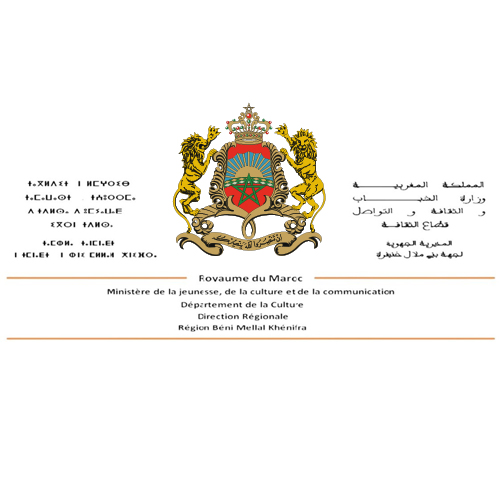

المهرجان الدولي المتنقل
الدورة الثالثة، تحت شعار:
تُخصص الدورة الثالثة للمهرجان الدولي المتنقل "الجسد في حركة" (Le Corps en mouvement) لشخصية الأم، من خلال منظور الحركة والتحول، وعبور الفضاءات والأزمنة والمعايير. لقد صُمم هذا المهرجان ليكون فضاءً للحوار بين البحث الأكاديمي، والإبداع الفني، والممارسات الجسدية، حيث يستكشف الجسد كحيز تُنحت فيه التجارب الفردية والجماعية. ستشهد هذه الدورة عروضاً علمية، وأداءات فنية، وتجهيزات بصرية، وعروضاً سينمائية، وقراءات، وورش عمل، وموائد مستديرة، وذلك ضمن صيغة متنقلة تهدف إلى تعزيز التبادل الثقافي وتداخل التخصصات.... تعرف على المزيد حول الدورة الثالثة.
الحمل، وفترة ما بعد الولادة، والشيخوخة، باعتبارها حركات بيولوجية تُعيد تشكيل الهوية.
تمثيلات الأم في الأدب، الفنون البصرية، السينما، والرقص المعاصر.
الجسد السياسي، الطبيعة الطبية، المعايير الاجتماعية، والمنظور النسوي النقدي.



28 فبراير 2026
الإنجليزية، الفرنسية، العربية
الشرقي كركابة
ندعو الباحثين والفنانين لإرسال مقترحاتهم (الملخص، صيغة المشاركة، والسيرة الذاتية) قبل الموعد النهائي.




بني ملال، المغرب

مارسيليا، فرنسا

أفورار، المغرب

بني ملال، المغرب